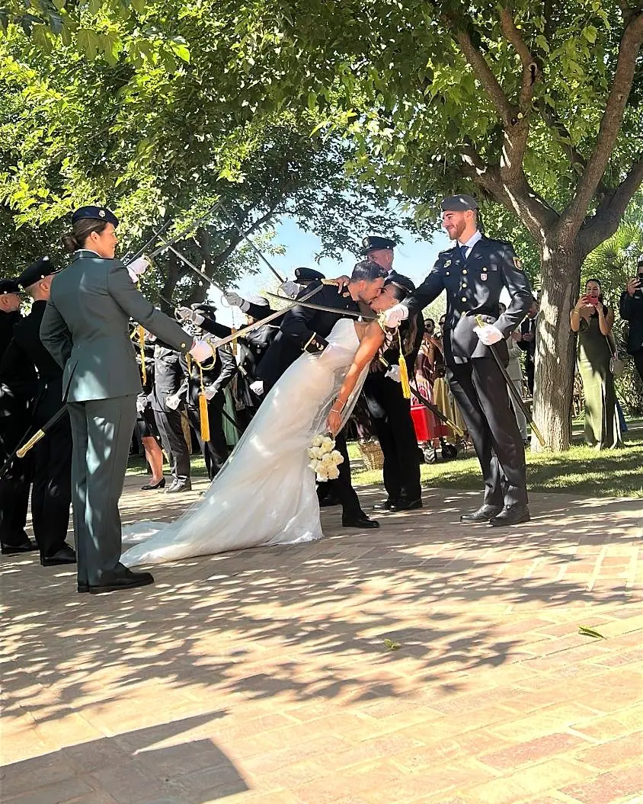
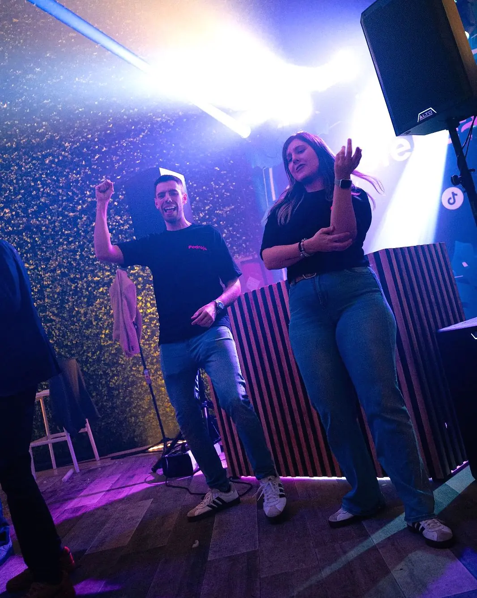
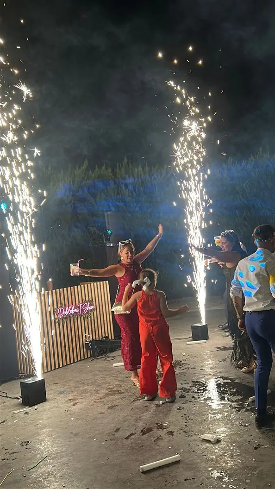
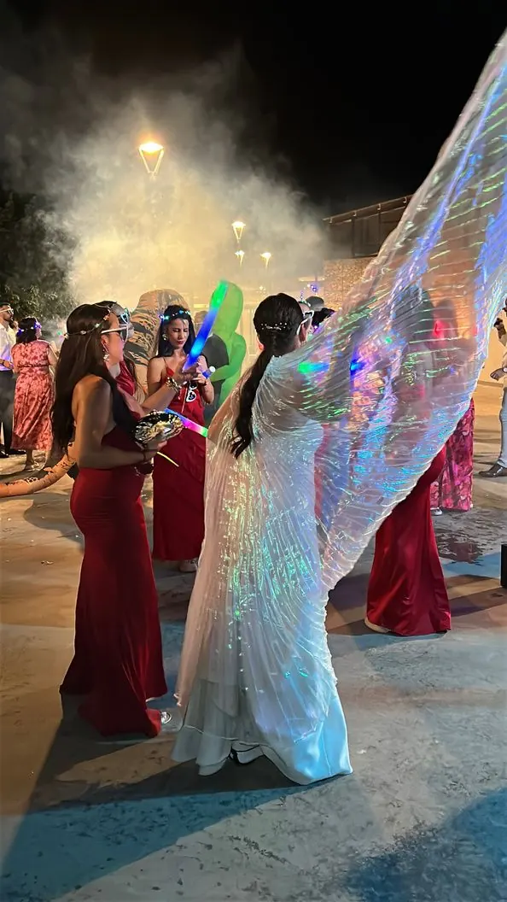
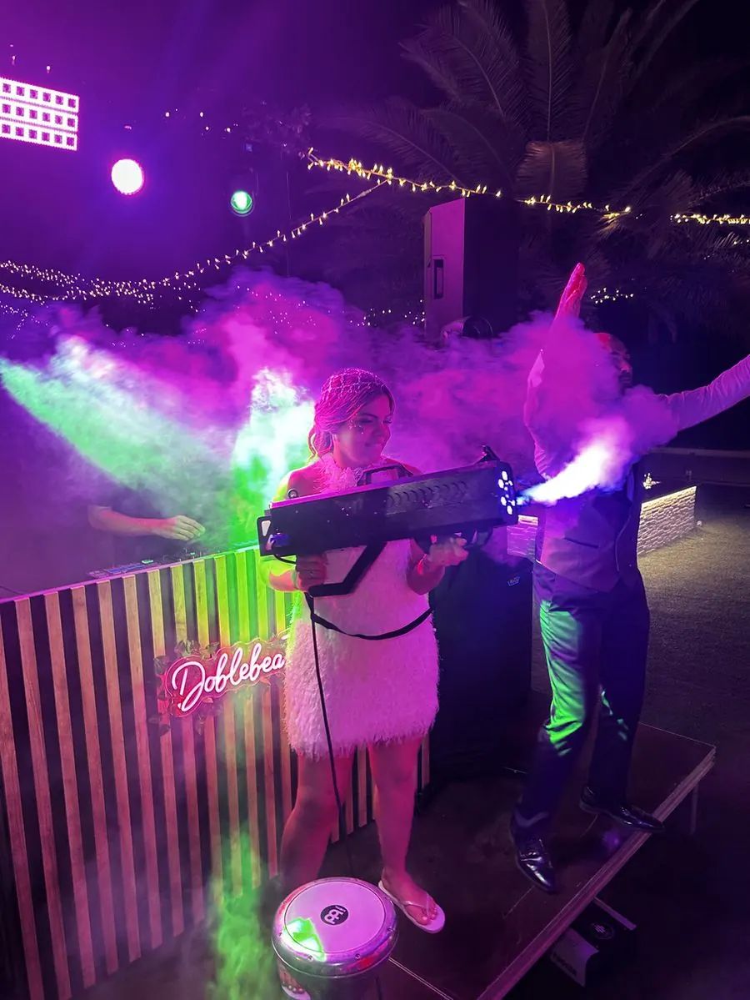
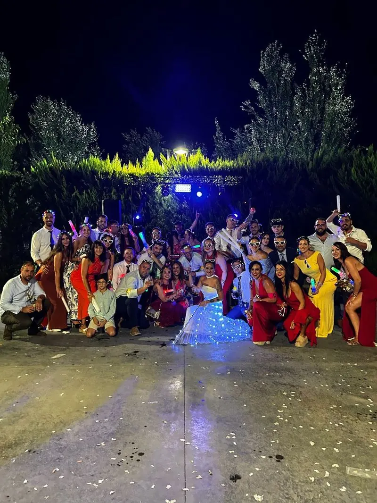
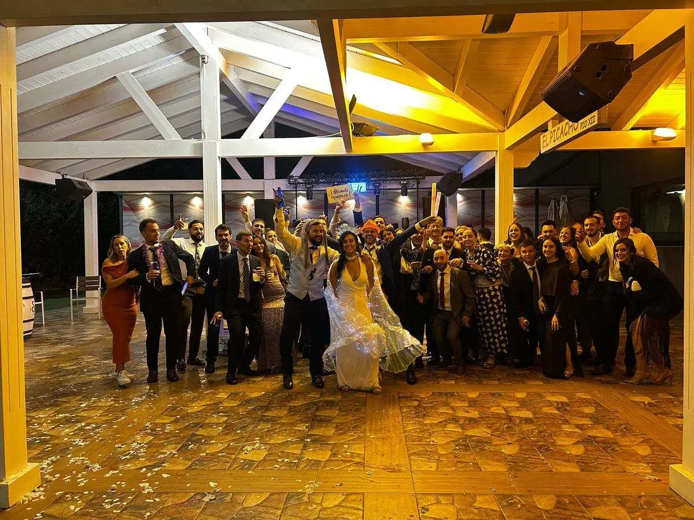
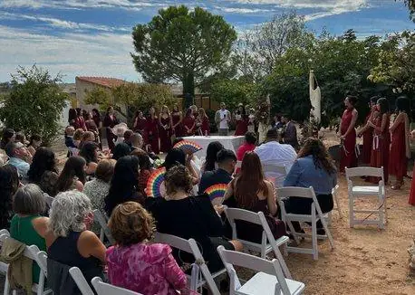
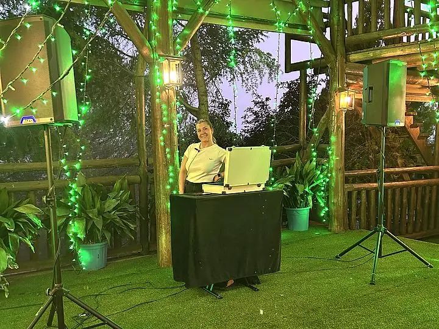

Leemos la pista en directo
Una lista cerrada no sabe cuándo se cansa la gente. Pedroja cambia la sesión en tiempo real según quién baila, con vuestros imprescindibles como base.
Vuestros invitados bailando hasta el final, cada momento a su hora y vosotros sin mirar el reloj. Solo hacemos una boda al día: la vuestra.
Solo una boda al día · Respuesta en menos de 24 h

Y cómo lo evitamos para que no os pase a vosotros.
Una lista cerrada no sabe cuándo se cansa la gente. Pedroja cambia la sesión en tiempo real según quién baila, con vuestros imprescindibles como base.
Tarta, ramos, entradas y Hora Loca: ella se sincroniza con la finca y el catering para que no miréis el reloj ni una vez.
Bloqueamos vuestra fecha en exclusiva. Llegamos con margen, montamos sin prisas y lo probamos todo antes de que entre el primer invitado.
Con Boda Completa sonorizamos ceremonia, cóctel y banquete, con micrófonos para lecturas, discursos y sorpresas.

Somos un equipo de dos que se complementa: uno lee la pista y otra se asegura de que cada momento llegue a su hora. Así vosotros solo os preocupáis de disfrutar.
Más de 12 años y +300 eventos leyendo la pista en directo. Sin lista cerrada: la sesión se adapta en tiempo real a vuestros invitados, con vuestros imprescindibles como base, para que la pista no se vacíe nunca.
Vuestra tranquilidad absoluta en la sombra. Se encarga de la sincronización con el catering y la finca, de los momentos especiales (tarta, ramos) y de la logística de la Hora Loca.
Garantía de exclusividad: una sola boda por día.
Los momentos que vuestros invitados van a grabar y compartir. Todo con equipo propio, montado y probado antes de que llegue nadie.





Dos formatos para que solo decidáis cuánto queréis que dure la fiesta. Precios desde, según fecha, lugar, horas extra y extras; os enviamos presupuesto cerrado.
Desde 1.500 €
Cinco horas de fiesta sin bajones, para una barra libre de la que se hable.

Desde 2.000 €
Todo el día resuelto con un solo equipo, de la ceremonia a la última canción.


Para parejas que quieren todo perfecto, sin coordinar a varios proveedores
| Incluye | Barra libre | Boda completa |
|---|---|---|
| Precio | Desde 1.500 € | Desde 2.000 € |
| Sesión DJ en directo en la barra libre | 5 horas | 5 horas |
| Sonido e iluminación de discoteca | Sí | Sí |
| Coordinadora de momentos | Sí | Sí |
| Hora Loca: chispas, humo, atrezzo y confeti | Sí | Sí |
| Sonido de ceremonia, cóctel y banquete | No | Sí |
| Micrófonos para lecturas y discursos | No | Sí |
| Glitter Bar (1 h 30 min aprox.) | Extra: 250 € | Extra: 250 € |
TODO EL EQUIPO ES PROPIO · SIN SUBCONTRATACIONES
Reseñas reales de parejas que se casaron con nosotros. Copiadas tal cual de Bodas.net.
Una experiencia de 10! Contar con vosotros para nuestra boda fue todo un acierto. Desde el primer momento fuisteis súper profesionales, atentos y cercanos, y supisteis captar perfectamente el ambiente que queríamos para nuestro día. La música estuvo genial, animasteis muchísimo la fiesta y conseguisteis que todo el mundo, desde los más jóvenes hasta los más mayores, disfrutara y no parara de bailar. Sin duda, fuisteis una parte fundamental para que nuestra boda fuera tan especial e inolvidable. ¡Muchísimas gracias por hacer que la fiesta fuera espectacular! Los recomiendo al 100 %.
No podemos estar más contentos con el trabajo del DJ y su acompañante en nuestra boda. Desde el primer momento demostraron una profesionalidad increíble, estuvieron pendientes de todo y consiguieron que la fiesta estuviera animada de principio a fin, ¡sin que decayera en ningún momento! La música fue espectacular, supieron crear el ambiente perfecto en cada momento y la iluminación, el juego de luces y todos los detalles hicieron que la fiesta fuera simplemente fenomenal. Además, estuvieron haciendo un montón de fotos y capturando momentos que nos llevamos de recuerdo. También queremos destacar que durante la ceremonia todo sonó perfecto, cuidando cada detalle para que todo saliera genial. Se nota cuando hay profesionales que disfrutan con su trabajo y se implican de verdad para que un día tan especial salga perfecto. ¡Gracias a los dos por formar parte de nuestra boda y ayudarnos a vivir una fiesta inolvidable! Os recomendamos al 100 %. ¡Sois unos cracks!
Desde el primer momento, Pedro fue muy profesional y supo adaptarse perfectamente a nuestros gustos y al ritmo de la celebración. Estuvo atento a cada detalle, tanto a los momentos más importantes como a la energía de la fiesta. No tuvo ningún problema en atender peticiones y supo manejar los tiempos de la boda de forma excelente, haciendo que todo fluyera de manera natural. Estamos muy contentos con su trabajo y sin duda lo recomendamos. Fue una parte clave para que nuestro día fuera todavía más especial.
Solo podemos recomendarlos y darles las gracias por el día de nuestra boda! Nos ayudaron un montón desde el principio, increíble la organización y la coordinación taaaaaan profesional y taaaaaan amable, nos hicieron estar tranquilos desde el principio porque tenían todo controlado!! Mil gracias de verdad, contaremos con vosotros en próximos eventos :)
Desde el principio al contactar con ellos ya nos dieron buenas vibras. Todo salió perfecto, nos ayudaron con todo lo posible. Nos hizo la canción para entrar al banquete que no pudo ser más estupenda. Y la barra libre salió todo el mundo contento con la música. Nos sorprendieron haciendo juegos de limbo y con la botella de chupitos que no pudo estar mejor. A nosotros no nos hacía gracia la hora loca pero fue genial y nos lo pasamos de maravilla. Una maravilla de pareja.
Sonorizaron toda nuestra boda y fue simplemente espectacular, atentos en todo momento a cada detalle y muy involucrados en que el evento fuera de 10. Simplemente los mejores y sin duda volveremos a contar con ellos. 100% recomendable
Son muy profesionales, nos ayudaron a sacar la alegría a nuestro día más importante, no nos tuvimos que preocupar por nada porque lo organizaron todo ellos. Os hemos recomendado para todas las fiestas, el presupuesto es flexible y buscas alternativas
Fincas, pueblos donde trabajamos y preguntas frecuentes de cada provincia.
Planificación al detalle para que vosotros solo disfrutéis.
Bloqueamos vuestra fecha para volcarnos al 100%. Una sola boda al día para garantizar máxima dedicación y tranquilidad.
Diseñamos la banda sonora a vuestra medida, definimos el timing del evento y preparamos sorpresas como la mezcla de las entradas.
Llegamos con margen de sobra, montamos el sonido y la iluminación profesional y coordinamos detalles con la finca.
Sincronización continua de momentos clave (tarta, ramos, Hora Loca) y dirección musical en directo adaptada al pulso de la pista.
El clímax de la noche: efectos especiales, fuegos fríos, atrezzo y juegos con invitados para que nadie quiera irse a casa.
Trabajamos en toda la provincia de Ciudad Real, Toledo, Cuenca y Albacete y en zonas limítrofes, con base en Tomelloso: Alcázar de San Juan, Valdepeñas, Manzanares, Villarrobledo, Quintanar de la Orden, Mota del Cuervo, Socuéllamos, Daimiel y muchos más.
Solo una. Bloqueamos vuestra fecha en exclusiva para dedicarle todo el equipo y toda la atención.
Cinco horas de sesión DJ profesional, sonido profesional e iluminación de club, coordinadora de momentos y Hora Loca con chispas, humo, atrezzo y confeti.
Sí. Con el paquete Boda Completa sonorizamos la ceremonia civil, el cóctel y el banquete, con un equipo secundario con microfonía para lecturas y discursos.
En una reunión previa diseñamos la banda sonora y definimos el timing del evento: entradas, primer baile e imprescindibles. El día de la boda, Pedroja DJ dirige la música en directo y, en la barra libre, adapta la sesión a lo que pide la pista.
Sí. Antes de la boda hacemos una reunión para diseñar vuestra banda sonora. Vuestros imprescindibles son la base y en directo adaptamos la sesión a lo que pide la pista.
Todo el equipo de sonido, iluminación y efectos es propio. No subcontratamos.
El paquete Barra libre empieza desde 1.500 € y la Boda completa desde 2.000 €. El precio final depende de la fecha, el lugar, las horas extra y los extras que elijáis. Os enviamos presupuesto cerrado sin compromiso.
Con una señal bloqueamos vuestra fecha. Os lo explicamos todo en el presupuesto.
Cuanto antes. Solo hacemos una boda al día, así que cuando alguien reserva una fecha deja de estar disponible. Los sábados de temporada son los primeros en ocuparse.
No pinchamos una lista cerrada: leemos la pista en directo y cambiamos de estilo en cuanto vemos que la gente se para. Si hace falta un empujón, la Hora Loca lo da.
Bloquead vuestra fecha antes de que quede ocupada. Respondemos en menos de 24 horas.
Teléfono651 306 185 WhatsAppEscríbenos ahora Emailhola@doblebeatshow.es Instagram@doblebeatshowHorario de atención: lunes a viernes, de 10:00 a 14:00 y de 16:00 a 20:00.
“Llevamos más de una década haciendo que la gente no quiera irse a casa.”